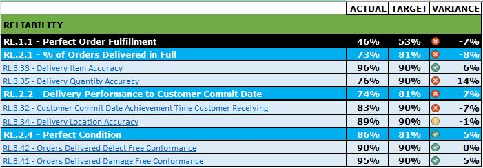
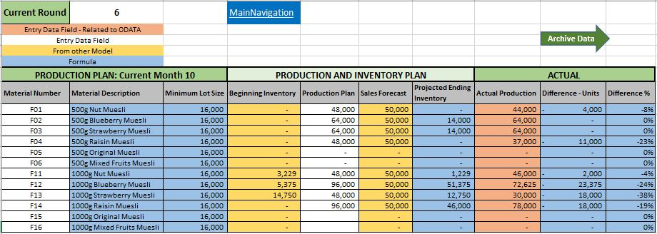

In this project I imported data from a database directly into an Excel Worksheet and built a Power Pivot Model utilizing Power Query. I performed data quality audit, developed metrics and KPI's, create operational performance dashboard and supplier performance scorecard


In this project I created a way to track KPIs (sales, revenue, profit, returns), compare regional performance, analyze product-level trends and forecast, and identify high-value customers from a folder of raw CSV files.
connect and transform the raw data, build a relational data model, create new calculated columns and DAX measures, and design an interactive report to analyze and visualize the data.

In this project I created a business strategy, sales and operations planning, analytics, and the operationalization of a strategy using data from an ERP system utilizing excel formulars and functions. Analyze data from an ERP system, develop a Business Strategy, develop goals in terms of business KPIs to monitor the achievement of the strategy, and develop Sales and Operations Plan (Forecast, Production Plan, Inventory Model).